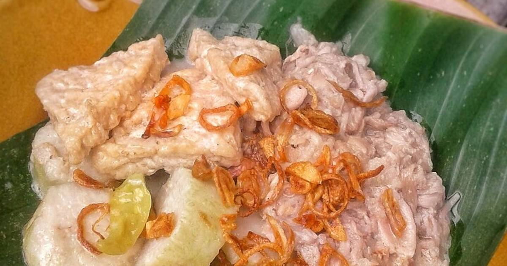

Lentog Tanjung

A. Ingredients
The ingredients of the menu can be split into 6 groups; the carbohi, the seasoning, the sauce, and the sprinkle.
- The carbohydrate:
- Rice cakes (lontong), as needed
- Jackfruit Curry:
- 1/4 piece of young jackfruit
- 500 ml coconut milk (1/2 pack of instant coconut milk mixed with water)
- 1 thumb-sized piece of galangal
- 1 bay leaf
- Salt, sugar, and stock powder, to taste
- Spice Paste (for jackfruit curry):
- 3 cloves garlic
- 4 shallots
- 2 candlenut
- Tofu Curry:
- 5 small blocks of tofu, cut in half and then into triangles
- 1 thumb-sized piece of galangal
- 1 bay leaf
- 2 kaffir lime leaves
- 1 pack of instant coconut milk
- Water, as needed
- Whole bird's eye chilies, as desired
- Salt, sugar, and stock powder, to taste
- Spice Paste (for tofu curry):
- 2 tablespoons fried shrimp
- 3 cloves garlic
- 5 shallots
- 3 candlenuts
- 1 teaspoon white pepper
- 1 teaspoon coriander seeds
- Garnish:
B. Instructions
- Boil the young jackfruit until tender, drain, and then mash it using a mortar and pestle by gently crushing it.
- In a pot, combine the mashed young jackfruit, coconut milk, spice paste, galangal, and bay leaf. Add salt, sugar, and stock powder to taste. Cook until the coconut milk has reduced by half. Taste and adjust seasoning. Turn off the heat and set aside.
- Fry the tofu until it's half-cooked, then set aside
- Grind the spice paste for the tofu dish, making sure to grind the fried shrimp along with the other ingredients.
- Sauté the spice paste until fragrant, then add the galangal, bay leaves, and kaffir lime leaves.
- Add water and bring it to a boil. Once boiling, add the tofu and bird's eye chilies. Season with salt, sugar, and stock powder. Add the coconut milk and adjust the seasoning. Cook until the chilies soften.
- To serve: Place the rice cakes (lontong) on a plate, top with the young jackfruit curry, and add the tofu curry. Garnish with fried shallots and serve.
Source of the recipe
Home